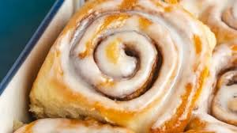

Bridget's Kitchen
What Cinnamon bun is about
Welcome to Bridgets kitchen, were we teach you how to cook
and bake. This is a platform of self taught in your own space
and get to know the basics of being creative on your own.
 These are classic, homestyle cinnamon rolls. It took me lots of recipe testing trial-and-error to develop quick cinnamon rolls that maintain all the flavor and texture of traditional overnight cinnamon rolls. But THIS. IS. IT. And I promise, making these easy cinnamon rolls is 100x more satisfying than that feeling you get from popping open a store-bought can of ready-to-bake rolls.
These are classic, homestyle cinnamon rolls. It took me lots of recipe testing trial-and-error to develop quick cinnamon rolls that maintain all the flavor and texture of traditional overnight cinnamon rolls. But THIS. IS. IT. And I promise, making these easy cinnamon rolls is 100x more satisfying than that feeling you get from popping open a store-bought can of ready-to-bake rolls.
These are classic, homestyle cinnamon rolls. It took me lots of recipe testing trial-and-error to develop quick cinnamon rolls that maintain all the flavor and texture of traditional overnight cinnamon rolls. But THIS. IS. IT. And I promise, making these easy cinnamon rolls is 100x more satisfying than that feeling you get from popping open a store-bought can of ready-to-bake rolls.

Giving you a taste of cinnamonbun with its exquiste
mouth tasting joy and the feels.